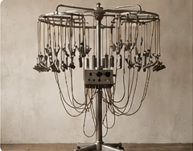
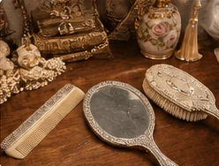
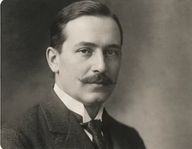
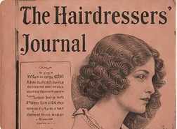
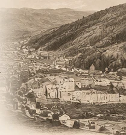

TECHNOLOGY & PATENTS
Devices, Processes
and Inventions
Historical appliances, methods, patents and technological change.
RESEARCH AREARESEARCH · DOCUMENTATION · HISTORICAL SOURCES
Exploring the history of hairdressing, its pioneers, technologies, industries and international networks.
DISCOVER OUR COLLECTIONSOUR RESEARCH
Independent research areas under a common scholarly framework.

TECHNOLOGY & PATENTS
Historical appliances, methods, patents and technological change.
RESEARCH AREA
TOOLS & MATERIALS
Work tools, raw materials, craft production and manufacturing.
COLLECTION IN DEVELOPMENT
PIONEERS & PEOPLE
Biographies, international networks and historical contexts.
RESEARCH AREA
JOURNALS & INDUSTRY
Historical journals, advertising and the hairdressing industry.
RESEARCH AREATHE NESSLER RESEARCH PROJECT
Biographical research, original documents and the historical development of the permanent wave.
VISIT THE NESSLER PROJECT →
Based on historical sources and original documents.
People, technologies and networks across borders.
Independent and non-commercial research.
Exchange of information and collaboration.
The International Hairdressing History Project is an independent, archival-based research initiative documenting the history of the hairdressing profession, its technology, industry and international networks, with particular attention to the period c. 1880–1950.
Research and documentation: Armin Wolfarth, Winterthur, Switzerland. armin@wolfarth.ch
Development preview: The illustrative images on this page are temporary design placeholders, not authenticated archival photographs or portraits. Research collections marked as in development are not yet published.